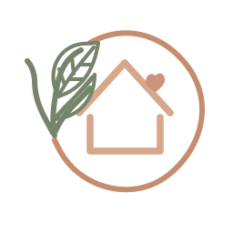
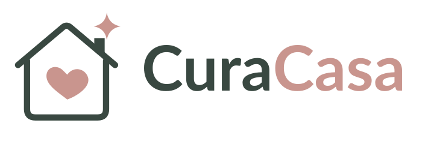
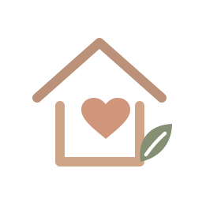
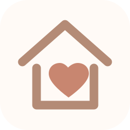
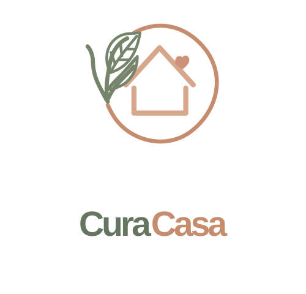
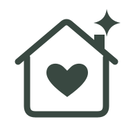
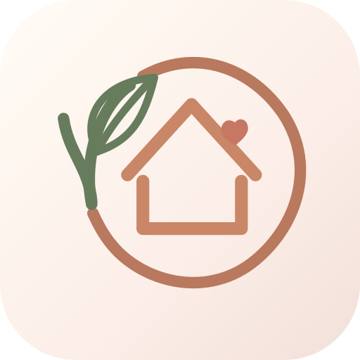
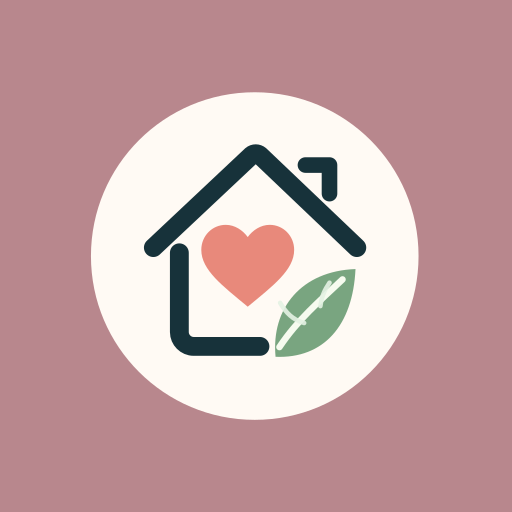
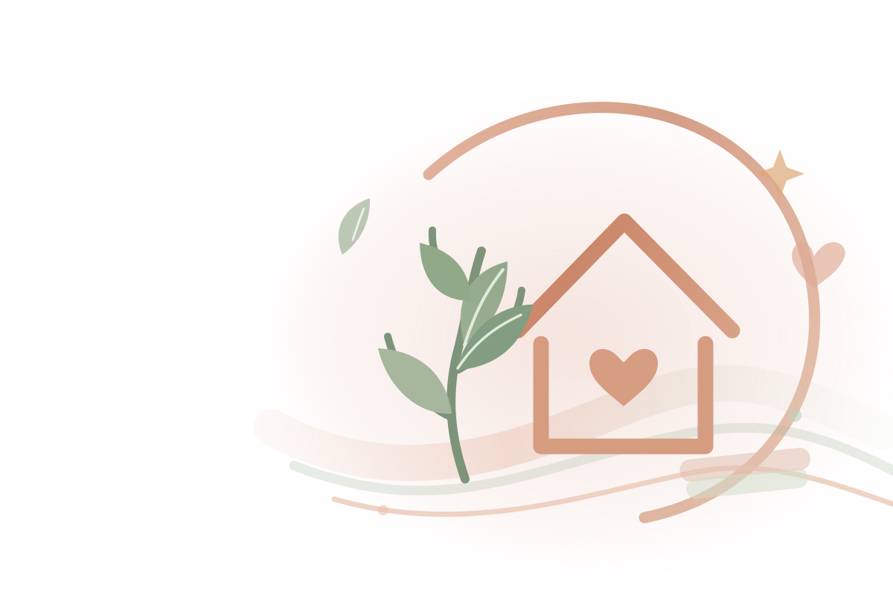

Principale · 72 px e oltre
Cerchio aperto, casa, cuore e ramo: per homepage, presentazioni, documenti, stampa e profili.

← Torna alla homepageLa casa racconta le abitudini. Il cuore comunica attenzione; il ramoscello, serenità. La firma rimane riconoscibile anche quando l'icona diventa minuscola.
Il simbolo originale conserva cerchio aperto, casa, cuore e foglie. Al diminuire dello spazio rimuoviamo dettagli, non cambiamo soggetto.

Cerchio aperto, casa, cuore e ramo: per homepage, presentazioni, documenti, stampa e profili.

Stesso simbolo, vene ridotte e tratto più deciso: per barra superiore e icona installata.

Casa e cuore senza cerchio e foglie: leggibilità prioritaria per le schede del browser.
La dicitura Cura in verde salvia e Casa in terracotta, con uno spazio di rispetto attorno al simbolo.

Avatar social e composizioni quadrate.

Timbrature, ricami e applicazioni con un solo colore.

Per sfondi scuri e solidi: massima chiarezza.
Le sfumature di CuraCasa restano delicate; loghi e testi utilizzano invece tonalità sufficientemente contrastate.
#FAF5EF#F5E5E1#E6EEED#C58D6D#65745DLe favicon sono disegnate appositamente: non sono semplici riduzioni del marchio completo.

PWA · standard
PWA · maskableL'illustrazione decorativa accompagna i contenuti senza sostituirsi al testo: opacità bassa, sfumatura laterale e nessuna scritta nell'immagine.
Faccende, scadenze e calendario in un'unica app.

Lascia almeno lo spazio equivalente a un cuore intorno al marchio. Usa master da 72 px in su, compatta da 32 px e favicon sotto 32 px. Prediligi avorio, salvia e terracotta.
Non distorcere il simbolo, non aggiungere ombre pesanti né dettagli alle favicon, non collocare loghi sottili su fotografie complesse e non alterare proporzioni fra simbolo e logotipo.